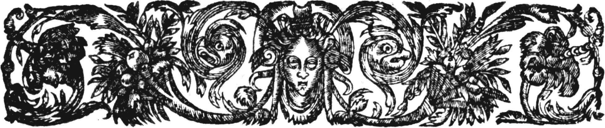
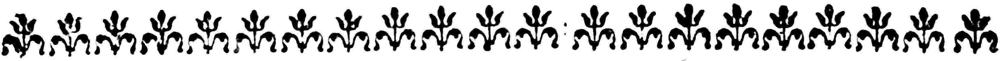

Hyperpièces Aux sources de la création dramatique
Le site Hyperpièces est construit à partir des annexes de la thèse de Céline Fournial,
Imitation et création dans le « théâtre moderne » (1550-1650) :
la question des cycles d’inspiration
Pour chaque pièce, la date de composition ou, faute d’information, la date de création, est indiquée entre parenthèses.
Les comédies, tragédies et tragi-comédies sont classées par ordre chronologique de composition ou création,
lorsque l’état des recherches permet de déterminer ces dates, à défaut elles figurent selon leur date de publication.
Dans la mesure du possible, nous avons ajouté une image miniature avec un lien vers l’édition numérisée dans Gallica.
À défaut, nous avons opté pour un lien vers une autre édition dans Gallica, ou dans une autre bibliothèque numérique.
Dans le cas où aucun lien n'a été trouvé vers une version numérisée, une photographie de la couverture ou
une marque d’imprimeur a parfois été ajoutée.
La ou les sources principales des pièces sont indiquées, passez la souris sur le symbole ci-dessous, quand il apparaît, pour découvrir la source qui a inspiré la pièce.
sources antiques
Cette liste a été élaborée à partir des éditions critiques, des différentes études sur les pièces du corpus
et leurs sources citées dans la bibliographie et des recherches de Céline Fournial.

Les sources du corpus
Cliquez sur un type de sources pour faire apparaître ou disparaître une visualisation des pièces concernées dans le corpus. Dans la visualisation, passez la souris sur les liens pour découvrir la pièce correspondante.
Les sources antiques
Belleau Rémy - La Reconnue Baïf Jean-Antoine de - Le Brave Le Loyer de Brosse Pierre - La Nephelococugie Rotrou Jean de - Les Ménechmes Benserade Isaac de - Iphis et Iante Desmarets de Saint-Sorlin Jean - Aspasie Rotrou Jean de - Les Sosies - Le Capitan Mareschal André - Le Véritable Capitan Matamore Rotrou Jean de - Les Captifs Jodelle Estienne - Cléopâtre captive La Peruse Jean de - Médée Toutain Charles - La Tragédie d’Agamemnon Jodelle Estienne - Didon se sacrifiant Le Duchat François - Agamemnon Grévin Jacques - César Grévin Jacques - César La Taille de Bondaroy Jacques de - La Mort de Daire La Taille de Bondaroy Jacques de - La Mort de Daire La Taille de Bondaroy Jacques de - Alexandre La Taille de Bondaroy Jacques de - Alexandre Filleul de la Chesnaye Nicolas - Achille Filleul de la Chesnaye Nicolas - Achille Filleul de la Chesnaye Nicolas - Achille Filleul de la Chesnaye Nicolas - Lucrèce Filleul de la Chesnaye Nicolas - Lucrèce Garnier Robert - Porcie Garnier Robert - Porcie Garnier Robert - Porcie Garnier Robert - Hippolyte Garnier Robert - Cornélie Garnier Robert - Cornélie Garnier Robert - Cornélie Guersens Julien - Panthée Garnier Robert - Marc-Antoine Garnier Robert - Marc-Antoine Garnier Robert - La Troade Garnier Robert - La Troade Garnier Robert - Antigone Garnier Robert - Antigone Garnier Robert - Antigone Matthieu Pierre - Clytemnestre Le Breton de La Fon Gabriel - Adonis Beaubreuil Jean de - Regulus Beaubreuil Jean de - Regulus Bousy Pierre de - Méléagre Robelin Jean - La Thébaïde Favre Antoine - Les Gordians et Maximins Favre Antoine - Les Gordians et Maximins Percheron Luc - Pyrrhe Percheron Luc - Pyrrhe Percheron Luc - Pyrrhe Montreux Nicolas de (pseudonyme Olenix du Mont-Sacré) - Cléopâtre Poullet Pierard - Charite Laudun d’Aigaliers Pierre de - Horace Montchrestien Anthoine de - Sophonisbe Behourt Jean - Hypsicratée Heudon Jean - Pyrrhe Heudon Jean - Pyrrhe Heudon Jean - Pyrrhe Heudon Jean - Pyrrhe Hays Jean - Cammate Regnault Guyllaume - Octavie Berthrand d’Orléans François - Priam Pageau Margarit - Bysathie Pageau Margarit - Monime Montchrestien Anthoine de - Les Lacènes Champ-Repus Jacques - Ulysse Montreux Nicolas de - La Sophonisbe Montreux Nicolas de - La Sophonisbe Thierry de Mont-Justin Pierre - Coriolanus Marye Pierre et Baptiste - Psamménite Montchrestien Anthoine de - Hector Blanbeausault Isaac de Laffemas - La Goutte Prévost Jean - Œdipe Billard de Courgenay Claude - Polixène Billard de Courgenay Claude - Panthée Guérin Darronnière Claude - La Panthée Hardy Alexandre - Panthée Hardy Alexandre - Scédase Hardy Alexandre - Didon se sacrifiant Hardy Alexandre - Coriolan - Tragédie sur la mort de Lucresse Hardy Alexandre - La Mort d’Achille Hardy Alexandre - La Mort d’Achille Hardy Alexandre - Mariamne Oudineau - La Philarchie des dieux Prévost Jean - Hercule Prévost Jean - Turne Mainfray Pierre de - Amours du grand Hercule Bernier de la Brousse Joachim - L’Embryon romain Bernier de la Brousse Joachim - L’Embryon romain Boissin de Gallardon Jean - La Fatalle Boissin de Gallardon Jean - La Perséenne Mainfray Pierre de - Cyrus triomphant Hardy Alexandre - Méléagre Hardy Alexandre - La Mort de Daire Hardy Alexandre - La Mort de Daire Hardy Alexandre - La Mort d’Alexandre Hardy Alexandre - La Mort d’Alexandre Viau Théophile de - Les Amours tragiques de Pyrame et Thisbé - Le Trébuchement de Phaéton Hulpeau Charles - La Charité Borée Vincent - Achille victorieux Borée Vincent - Achille victorieux - La Tragédie de Pasiphaé Borée Vincent - Tomyre victorieuse Hardy Alexandre - Timoclée Hardy Alexandre - Alcméon Frénicle Nicolas - Niobé Rotrou Jean de - Hercule mourant La Pinelière - Hippolyte Mairet Jean - Sophonisbe Mairet Jean - Sophonisbe Corneille Pierre - Médée Scudéry Georges de - La Mort de César Mairet Jean - Le Marc-Antoine Benserade Isaac de - Cléopâtre Rotrou Jean de - Crisante Benserade Isaac de - La Mort d’Achille Benserade Isaac de - La Mort d’Achille La Calprenède Gautier de Coste sieur de - La Mort de Mitridate Guérin de Bouscal Guyon - La Mort de Brute et de Porcie Scudéry Georges de - Didon Chevreau Urbain - La Lucrèce romaine Du Ryer Pierre - Lucrèce Tristan L’Hermite François L’Hermite sieur du Soliers dit - La Mariane Chapoton François - Le Véritable Coriolan Chaulmer Charles - La Mort de Pompée Chaulmer Charles - La Mort de Pompée L’Héritier de Nouvelon Nicolas - Hercule furieux Monléon Monsieur de - Le Thyeste Rotrou Jean de - Antigone Durval Jean-Gilbert - Panthée Claveret Jean - Le Ravissement de Proserpine L’Hermite de Vauzelle Jean-Baptiste - La Cheute de Phaéton Tristan L’Hermite François L’Hermite sieur du Soliers dit - Panthée Chevreau Urbain - Coriolan Grenaille François de - L’Innocent malheureux ou la Mort de Crispe Guérin de Bouscal Guyon - Cléomène Chapoton François - La Descente d’Orphée aux enfers Chapoton François - La Descente d’Orphée aux enfers La Caze - Cammane Benserade Isaac de - Méléagre Corneille Pierre - Horace Corneille Pierre - Horace Aubignac François Hédélin abbé d’ - Zénobie Du Teil Jean - L’Injustice punie Rotrou Jean de - Iphigénie Corneille Pierre - Cinna Corneille Pierre - Cinna Arnaud - Agamemnon Guérin de Bouscal Guyon - La Mort d’Agis Puget de La Serre Jean - Le Sac de Carthage Le Vert - Aristotime Boisrobert François de - La Vraye Didon Corneille - La Mort de Pompée Corneille - La Mort de Pompée Le Clerc Michel - La Virginie romaine Tristan L’Hermite François L’Hermite sieur du Soliers dit - La Mort de Sénèque Magnon Jean - Artaxerce Du Ryer Pierre - Scévole Du Ryer Pierre - Scévole Gombaud Jean de - Les Danaïdes Corneille Pierre - Rodogune Corneille Pierre - Rodogune Boyer Claude - La Porcie romaine Brosse - La Turne de Virgile Gilbert Gabriel - Hypolite Griguette Bénigne - La Mort de Germanic Caesar Magnon Jean - Séjanus Magnon Jean - Séjanus Magnon Jean - Séjanus Mareschal André - Le Dictateur romain Prade Jean le Royer - La Victime d’Estat Auger Jacques - La Mort de Caton Boyer Claude - Porus Gilbert Gabriel - Sémiramis Boyer Claude - Aristodème I.M.S. - La Mort de Roxane I.M.S. - La Mort de Roxane Du Ryer Pierre - Thémistocle - La Mort des enfants de Brute Boyer Claude - Tyridate Hardy Alexandre - Les Chastes Et Loyales Amours de Théagène et Cariclée Genetay Octave-César - L’Éthiopique Auvray Jean - L’Innocence découverte - Tragi-comédie de la rébellion ou mescontentement des grenouilles contre Jupiter Mainfray Pierre - L’Éphésienne Hardy Alexandre - Alceste Hardy Alexandre - Procris Hardy Alexandre - Ariadne ravie Hardy Alexandre - Arsacome Hardy Alexandre - Aristoclée Du Ryer Pierre - Arétaphile Du Ryer Pierre - Clitophon Durval Jean-Gilbert - Les Travaux d’Ulysse La Selve - Les Amours infortunées de Léandre et d’Héron Croy Dorothée de - Cinnatus et Camma Sallebray - Le Jugement de Pâris et le ravissement d’Hélène Desmarets de Saint-Sorlin Jean - Scipion Scudéry Georges de - L’Amour tyrannique Desmarets de Saint-Sorlin Jean - Roxane Gillet de la Tessonerie - La Belle Policritte Saint-Germain Mathieu de Morgues sieur de - Le Grand Timoléon de Corinthe Boisrobert François Le Métel de - Palène Mareschal André - Le Mausolée Mareschal André - Le Mausolée Gillet de la Tessonerie - Le Triomphe des cinq passions Gillet de la Tessonerie - Le Triomphe des cinq passions Gillet de la Tessonerie - Le Triomphe des cinq passions Gillet de la Tessonerie - Le Triomphe des cinq passions Gillet de la Tessonerie - Le Triomphe des cinq passions Baro Balthasar - Parthénie Boisrobert François Le Métel de - Le Couronnement de Darie Gilbert Gabriel - Téléphonte Brosse - La Stratonice Brosse - La Stratonice Scudéry Georges de - Arminius Gillet de la Tessonerie - L’Art de régner Gillet de la Tessonerie - L’Art de régner Le Vert - Aricidie ou le Mariage de Tite Le Vert - Aricidie ou le Mariage de Tite Prade Jean Le Royer - Annibal Achille Tatius
1 références Achille Tatius Apollodore
2 références Apollodore Appien
6 références Appien Appien Alexandrin
1 références Appien Alexandrin Appien d’Alexandrie
2 références Appien d’Alexandrie Apulée
3 références Apulée Aristophane
1 références Aristophane Autre
3 références Autre Coeffeteau
1 références Coeffeteau Darès
2 références Darès Darès de Phrygie
4 références Darès de Phrygie Denys d’Halicarnasse
2 références Denys d’Halicarnasse Dictys
2 références Dictys Dictys de Crète
4 références Dictys de Crète Diodore de Sicile
4 références Diodore de Sicile Dion Cassius
5 références Dion Cassius Euripide
3 références Euripide Eutrope
1 références Eutrope Flavius Josèphe
3 références Flavius Josèphe Homère
4 références Homère Hygin
4 références Hygin Héliodore
2 références Héliodore Hérodien
1 références Hérodien Hérodote
2 références Hérodote Julius Capitolinus
1 références Julius Capitolinus Justin
3 références Justin Lucain
2 références Lucain Lucien
2 références Lucien Musée
1 références Musée Ovide
16 références Ovide Parthénios
1 références Parthénios Paul Orose
1 références Paul Orose Pausanias
2 références Pausanias Plaute
7 références Plaute Pline
2 références Pline Plutarque
51 références Plutarque Pétrone
1 références Pétrone Quinte-Curce
6 références Quinte-Curce Sophocle
1 références Sophocle Stace
3 références Stace Suétone
3 références Suétone Sénèque
20 références Sénèque Tacite
7 références Tacite Tite-Live
16 références Tite-Live Valère Maxime
1 références Valère Maxime Virgile
7 références Virgile Xénophon
6 références Xénophon Ésope
1 références Ésope comédies
10 références comédies tragédies
174 références tragédies tragi-comédies
40 références tragi-comédies
Les sources bibliques et religieuses
Montreux Nicolas de (pseudonyme Olenix du Mont-Sacré) - Joseph le chaste Le Doux Catherin - Tobie Rivaudeau André de - Aman La Taille de Bondaroy Jean de - Saül le furieux Des Masures Louys - Tragédies saintes La Taille de Bondaroy Jean de - La Famine La Taille de Bondaroy Jean de - La Famine Chantelouve Jean François Grossombre de - Pharaon Amboise Adrien d’ - Holoferne Le Coq Thomas - Tragedie representant l’odieus et sanglant meurtre commis par le maudit Cain à l’encontre de son frere Abel Matthieu Pierre - Esther Garnier Robert - Les Juifves Garnier Robert - Les Juifves Perrin François - Sichem ravisseur Bardon de Brun Bernard - Sainct Jacques Bardon de Brun Bernard - Sainct Jacques Laudun d’Aigaliers Pierre de - Diocletian Virey Jean de - La Machabée Behourt Jean - Ésaü Montchrestien Anthoine de - David Montchrestien Anthoine de - Aman Heudon Jean - Saint Clouaud Virey Jean de - Tragédie de la Divine & Heureuse Victoire des Machabées sur le Roi Antiochus Marcé Roland de - Achab Thierry de Mont-Justin Pierre - David Persécuté Soret Nicolas - La Céciliade Nancel Pierre de - Dina Nancel Pierre de - Josué Nancel Pierre de - Debora Billard de Courgenay Claude - Saül Chrestien des Croix Nicolas - Amnon & Thamar - Histoire tragédienne Ville-Toustain - La Naissance ou Création du Monde Ville-Toustain - Samson le fort Mainfray Pierre de - La Belle Hester - L’Histoire et tragedie du mauvais riche - Tragédie de la Chaste et vertueuse Susane Troterel Pierre - Sainte Agnès Poytevin E. - Saincte Catherine - La Perfidie d’Aman Troterel Pierre - La Vie et sainte conversion de Guillaume duc d’Aquitaine - Achab Tristan L’Hermite François L’Hermite sieur du Soliers dit - La Mariane La Calprenède Gautier de Coste sieur de - La Mort des enfans d’Hérodes ou Suite de Mariane Du Ryer Pierre - Saül La Calprenède Gautier de Coste de - Herménégilde Puget de La Serre Jean - Le Martyre de sainte Catherine Corneille Pierre - Polyeucte Desfontaines Nicolas Mary - Le Martyre de saint Eustache Desfontaines Nicolas Mary - Le Martyre de saint Eustache Du Ryer Pierre - Esther Picou Hugues de - Le Déluge universel Desfontaines Nicolas Mary - L’Illustre Olympie ou le Saint Alexis Desfontaines Nicolas Mary - L’Illustre Comédien ou le Martyre de saint Genest Corneille Pierre - Rodogune Corneille Pierre - Théodore Barran Henry de - Tragique comédie françoise de l’Homme justifié par Foi La Croix Antoine de - Tragi-comédie. L’Argument pris au troisième chapitre de Daniel Tiraqueau Charles et Sainte-Marthe Scévole de - Tragicomédie de Job Des Roches Catherine - Tobie George Jean - Abraham Ouyn Jacques - Thobie Gaulché Jean - L’Amour divin La Pujade Antoine de - Jacob Prévost Jean - Clotilde Gody Simplicien - Richecourt - Josaphat - Josaphat Gillet de la Tessonerie - Sigismond duc de Varsau Magnon Jean - Josaphat Magnon Jean - Josaphat Mouffle Pierre - Le Fils exilé Acta sanctorum
1 références Acta sanctorum Autre
20 références Autre Bello
1 références Bello Bible
36 références Bible Caussin
1 références Caussin Curé de Gisors
1 références Curé de Gisors Durmont
1 références Durmont Flavius Josèphe
2 références Flavius Josèphe Girard
2 références Girard Grégoire de Tours
1 références Grégoire de Tours Légende dorée
1 références Légende dorée Métaphraste
1 références Métaphraste P. Caussin
2 références P. Caussin Surius
1 références Surius pseudo-Abdias
1 références pseudo-Abdias comédies
2 références comédies tragédies
54 références tragédies tragi-comédies
16 références tragi-comédies
Les sources italiennes
Grévin Jacques - Les Esbahis Grévin Jacques - Les Esbahis La Taille Jean de - Les Corrivaus Belleau Rémy - La Reconnue Belleau Rémy - La Reconnue Larivey Pietro Giunto dit Pierre de - Le Laquais Larivey Pierre de - La Veuve Larivey Pierre de - Les Esprits Larivey Pierre de - Le Morfondu Larivey Pierre de - Les Jaloux Larivey Pierre de - Les Escholiers Turnèbe Odet de - Les Contens Larivey Pierre de - La Constance Larivey Pierre de - Le Fidelle Larivey Pierre de - Les Tromperies Godard Jean - Les Déguisés Benoet du Lac (anagramme de Claude Bonet) - La Tasse Gaillard Antoine - La Carline Pichou - La Filis de Scire - Boniface et le pédant Mairet Jean - Les Galanteries du duc d’Ossonne Rotrou Jean de - Le Filandre Rotrou Jean de - Clarice D’Ouville Antoine Le Métel - Aymer sans sçavoir qui Rotrou Jean de - La Sœur Bretog Jean - Tragédie françoise - La Tragédie françoise du Bon Kanut Du Monin Jean-Édouard - Orbecc-Oronte Montreux Nicolas de (pseudonyme Olenix du Mont-Sacré) - Isabelle Montchrestien Anthoine de - Sophonisbe Montchrestien Anthoine de - Sophonisbe Veins Aymard de - Clorinde Veins Aymard de - La Sophronie Bazire Gervais - Lycoris Bauter Charles (pseudonyme Meliglosse) - La Mort de Roger Thomas Jean - Isabelle - La Tragédie mahométiste - Tragedie francoise d’un more cruel envers son seigneur nommé Riviery Bauter Charles - Tragédie françoise des amours d’Angélique & de Medor Boissin de Gallardon Jean - Les Urnes vivantes - La Sophronie - Tragédie des Amours de Zerbin et d’Isabelle - La Mort de Roger - La Mort de Bradamante Bazire Gervais - Lycoris Bazire Gervais - Lycoris Bazire Gervais - Lycoris Mairet Jean - Sophonisbe Vion Dalibray Charles - Torrismon Mairet Jean - Le Grand Et Dernier Solyman Du Ryer Pierre - Alcionée Le Jars Louys - Lucelle Garnier Robert - Bradamante Billard de Courgenay Claude - Genèvre Hardy Alexandre - Gésippe Hardy Alexandre - Phraarte Du Rocher - L’Indienne amoureuse Rayssiguier - Aminte Rotrou Jean de - La Pèlerine amoureuse Bénésin - Luciane ou la Crédulité blasmable Mairet Jean - Virginie Scudéry Georges de - Le Prince déguisé Vion Dalibray Charles - Soliman La Calprenède Gautier de Coste - Bradamante Le Riche Guillaume - Les Amours d’Angélique et de Médor Le Riche Guillaume - Les Amours d’Angélique et de Médor Mairet Jean - Le Roland furieux Quenel Léon - Sélidore ou l’Amante victorieuse La Calprenède Gautier de Coste - Édouard Desfontaines Nicolas Mary - Alcidiane Rotrou Jean de - Célie D’Ouville Antoine le Métel - Les Morts vivants - Persélide Academici Intronati di Siena
1 références Academici Intronati di Siena Antonfrancesco Grazzini (dit Il Lasca)
1 références Antonfrancesco Grazzini (dit Il Lasca) Autre
6 références Autre Badello
1 références Badello Bandello
2 références Bandello Bandello dans Belleforest
2 références Bandello dans Belleforest Bargagli
1 références Bargagli Boccace
2 références Boccace Bonarelli
3 références Bonarelli Cassina
1 références Cassina Della Porta
2 références Della Porta Giordano Bruno
1 références Giordano Bruno Giraldi Cinzio
2 références Giraldi Cinzio Girolamo Razzi
2 références Girolamo Razzi Groto
4 références Groto Le Tasse
6 références Le Tasse Lodovico Dolce
1 références Lodovico Dolce Lorenzino de’ Medici
1 références Lorenzino de’ Medici Luigi Pasqualigo
1 références Luigi Pasqualigo L’Arioste
12 références L’Arioste Machiavel
1 références Machiavel Magagnati
1 références Magagnati Manzini
1 références Manzini Marino
1 références Marino Masuccio Salernitano
2 références Masuccio Salernitano Niccolò Buonaparte
1 références Niccolò Buonaparte Niccolò Secchi
1 références Niccolò Secchi Pescatore
3 références Pescatore Piccolomini
3 références Piccolomini Prospero Bonarelli
1 références Prospero Bonarelli Pétrarque
1 références Pétrarque Sforza d’Oddi
2 références Sforza d’Oddi Trissin
2 références Trissin Vincenzo Gabbiani
1 références Vincenzo Gabbiani comédies
25 références comédies tragédies
26 références tragédies tragi-comédies
22 références tragi-comédies
Les sources espagnoles
Rotrou Jean de - La Bague de l’oubli Rotrou Jean de - Diane - Le Matois Mary Les Cinq Auteurs - La Comédie des Tuileries Rotrou Jean de - La Belle Alphrède D’Ouville Antoine Le Métel - L’Esprit follet Guérin de Bouscal Guyon - Dom Quixote de la Manche Guérin de Bouscal Guyon - Dom Quichot de la Manche Guérin de Bouscal Guyon - Le Gouvernement de Sanche Pansa D’Ouville Antoine Le Métel - Les Fausses Véritez D’Ouville Antoine Le Métel - L’Absent chez soy Corneille Pierre - Le Menteur Brosse - Les Innocents coupables D’Ouville Antoine Le Métel - La Dame suivante Scarron Paul - Jodelet Brosse le jeune - Le Curieux impertinent Corneille Pierre - La Suite du Menteur D’Ouville Antoine Le Métel - Jodelet astrologue Scarron Paul - Les Trois Dorotées Scarron Paul - Les Trois Dorotées Scarron Paul - Les Trois Dorotées D’Ouville Antoine Le Métel - La Coifeuse à la mode D’Ouville Antoine Le Métel - La Coifeuse à la mode Scarron Paul - Dom Japhet d’Arménie Hardy Alexandre - Lucrèce ou l’Adultère puny Corneille Pierre - Horace Corneille Pierre - Polyeucte Rotrou Jean de - Le Véritable saint Genest C. A. de C. - L’Heureux désespéré Hardy Alexandre - Cornélie Hardy Alexandre - La Force du sang Hardy Alexandre - Félismène Hardy Alexandre - Frégonde Hardy Alexandre - La Belle Egyptienne Pichou - Les Folies de Cardenio Pichou - L’Infidèle Confidente La Croix C.-S. de - L’Inconstance punie Gougenot Nicolas - La Fidelle Tromperie Rotrou Jean de - Les Occasions perdues Rotrou Jean de - L’Heureuse Constance Rotrou Jean de - L’Heureuse Constance Beys Charles de - L’Hospital des fous Rotrou Jean de - Agésilan de Colchos Scudéry Georges de - L’Amant libéral Guérin de Bouscal Guyon - L’Amant libéral Rotrou Jean de - Les Deux Pucelles Corneille Pierre - Le Cid D’Ouville Antoine Le Métel - Les Trahizons d’Arbiran D’Ouville Antoine Le Métel - Les Trahizons d’Arbiran Rotrou Jean de - Laure persécutée Desfontaines Nicolas Mary - Bélisaire Sallebray - La Belle Égyptienne Regnault Charles - Blanche de Bourbon reyne d’Espagne L’Estoile Claude de - La Belle Esclave Rotrou Jean de - Bélissaire Rotrou Jean de - Dom Bernard de Cabrère Rotrou Jean de - Venceslas Amadis de Gaule
2 références Amadis de Gaule Autre
1 références Autre Calderón
5 références Calderón Castillo Solórzano
1 références Castillo Solórzano Cervantès
14 références Cervantès Diego de Agreda
1 références Diego de Agreda Don Quichotte
1 références Don Quichotte Gonzalo de Céspedes y Meneses
1 références Gonzalo de Céspedes y Meneses Guillén de Castro
1 références Guillén de Castro Juan Pérez de Montalbán
1 références Juan Pérez de Montalbán Lope de Vega
14 références Lope de Vega Mira de Amescua
3 références Mira de Amescua Montemayor
1 références Montemayor Pérez de Montalbán
1 références Pérez de Montalbán Remón
1 références Remón Rojas Zorilla
4 références Rojas Zorilla Ruiz de Alarcón
1 références Ruiz de Alarcón Salas Barbadillo
1 références Salas Barbadillo Tirso de Molina
3 références Tirso de Molina comédies
24 références comédies tragédies
4 références tragédies tragi-comédies
29 références tragi-comédies
Les sources françaises
Perrin François - Les Écoliers Benoet du Lac (anagramme de Claude Bonet) - La Tasse Rotrou Jean de - La Célimène Coste Guillaume de - La Lizimène Rotrou Jean de - Clorinde Scudéry Georges de - Le Fils supposé Rotrou Jean de - La Florimonde Corneille Pierre - L’Illusion comique Corneille Pierre - L’Illusion comique Gillet de la Tessonerie - La Comédie de Francion Grévin Jacques - César Bounin Gabriel - La Soltane - La Tragédie du sac de Cabrières Chantelouve Jean François Grossombre de - Gaspar de Colligny Le Coq Thomas - Tragedie representant l’odieus et sanglant meurtre commis par le maudit Cain à l’encontre de son frere Abel Fronton du Duc - Histoire tragique de la pucelle de Dom-Remy Du Souhait François - Radegonde Virey Jean de - La Tragédie de Jeanne d’Arques Du Hamel Jacques - Acoubar Montchrestien Anthoine de - Hector Chrestien des Croix Nicolas - Rosemonde Bauter Charles (pseudonyme Meliglosse) - La Rodomontade Bauter Charles (pseudonyme Meliglosse) - La Rodomontade - Tragedie de Jeanne d’Arques Billard de Courgenay Claude - Mérovée Leger Jean - Tragédie de Rhodes Schelandre Jean de (pseudonyme Daniel d’Anchères) - Tyr et Sidon Hardy Alexandre - Didon se sacrifiant Bellone Étienne - Les Amours de Dalcméon et de Flore Billard de Courgenay Claude - Henry le Grand - La Victoire du Phébus françois Matthieu Pierre - La Magicienne estrangère Hardy Alexandre - La Mort de Daire Hardy Alexandre - La Mort d’Alexandre Mainfray Pierre de - La Rhodienne La Charnays Pierre Cotignon de - Madonte Borée Vincent - Achille victorieux Borée Vincent - Béral victorieux Borée Vincent - Rhodes subjuguée Puget de La Serre Jean - Pyrame Matthieu Pierre - La Rocheloise Mairet Jean - Sophonisbe Benserade Isaac de - Cléopâtre Benserade Isaac de - La Mort d’Achille Scudéry Georges de - Didon Chapoton François - Le Véritable Coriolan Rotrou Jean de - Antigone Claveret Jean - Le Ravissement de Proserpine L’Hermite de Vauzelle Jean-Baptiste - La Cheute de Phaéton Tristan L’Hermite François L’Hermite sieur du Soliers dit - Panthée La Calprenède Gautier de Coste sieur de - La Mort des enfans d’Hérodes ou Suite de Mariane - Rosimonde ou le Parricide puny Sallebray - La Troade Benserade Isaac de - Méléagre Aubignac François Hédélin abbé d’ - La Pucelle d’Orléans La Calprenède Gautier de Coste de - Phalante Corneille Pierre - Cinna La Mesnardière Hippolyte Jules Pilet de - Alinde Benserade Isaac de ou La Mesnardière Hippolyte Jules Pilet de - La Pucelle d’Orléans Desfontaines Nicolas Mary - Perside Mareschal André - Le Jugement équitable de Charles le Hardy dernier duc de Bourgogne Magnon Jean - Artaxerce Boyer Claude - La Porcie romaine Boyer Claude - La Porcie romaine Griguette Bénigne - La Mort de Germanic Caesar Rotrou Jean de - Le Véritable saint Genest Montfleury - La Mort d’Asdrubal Desfontaines Nicolas Mary - La Véritable Sémiramis Tristan L’Hermite François L’Hermite sieur du Soliers dit - Osman Magnon Jean de - Le Grand Tamerlan et Bajazet Gillet de la Tessonerie - La Mort de Valentinian et d’Isidore Ouyn Jacques - Thobie Behourt Jean - La Polyxène (1597) Du Hamel Jacques - Lucelle C. A. de C. - L’Heureux désespéré Giboin Gilbert - Trage-comédie sur les Amours de Philandre et Marisée Hardy Alexandre - Dorise Mairet Jean - Chryséide et Arimand Mairet Jean - Sylvie La Morelle - Endymion ou le Ravissement Auvray Jean - Madonte La Croix C.-S. de - Climène La Croix C.-S. de - Climène Schelandre Jean de - Tyr et Sidon Du Ryer Pierre - Argénis et Poliarque Mairet Jean - Silvanire Scudéry Georges de - Ligdamon et Lidias Du Ryer Pierre - Argénis. Dernière journée Rayssiguier - Tragicomédie pastoralle Auvray Jean - Dorinde Du Ryer Pierre - Lisandre et Caliste Mareschal André - L’Inconstance d’Hylas Scudéry Georges de - Le Trompeur puny Scudéry Georges de - Le Trompeur puny Boisrobert François de - Pyrandre et Lisimène ou l’Heureuse Tromperie Rayssiguier - La Bourgeoise ou la Promenade de Saint-Cloud Scudéry Georges de - Le Vassal généreux Beys Charles de - Céline Mairet Jean - Virginie Rayssiguier - Les Amours de Palinice Scudéry Georges de - Orante Du Ryer Pierre - Cléomédon Rayssiguier - La Célidée sous le nom de Calirie Rotrou Jean de - Cléagénor et Doristée Desfontaines Nicolas Mary - Eurimédon ou l’Illustre Pirate La Calprenède Gautier de Coste - Bradamante Mairet Jean - L’Illustre Corsaire Chevreau Urbain - Les Deux Amis Gillet de la Tessonerie - La Quixaire La Caze - L’Inceste supposé Mareschal André - La Cour bergère - La Juste Vengeance Scudéry Georges de - Eudoxe Gilbert Gabriel - Marguerite de France Gilbert Gabriel - Marguerite de France Sallebray - L’Amante ennemie Sallebray - La Belle Égyptienne Desmarets de Saint-Sorlin Jean - Mirame Colletet Guillaume - Cyminde Desmarets de Saint-Sorlin Jean - Erigone Desmares - Roxelane Scudéry Georges de - Ibrahim L’Estoile Claude de - La Belle Esclave L’Estoile Claude de - La Belle Esclave Tristan L’Hermite François L’Hermite sieur du Soliers dit - La Folie du sage Scudéry Georges de - Axiane Puget de La Serre Jean - Thésée Gillet de la Tessonerie - L’Art de régner Gillet de la Tessonerie - L’Art de régner Gilbert Gabriel - Rodogune Desfontaines Nicolas Mary - Bellissante Magnon Jean - Le Mariage d’Oroondate et de Statira - Le Sage jaloux Antoine Du Périer
1 références Antoine Du Périer Antoine de Saint-Denis
1 références Antoine de Saint-Denis Aubignac
1 références Aubignac Audiguier
1 références Audiguier Autre
19 références Autre Barclay
2 références Barclay Baro
1 références Baro Baudier
2 références Baudier Bellan
1 références Bellan Belleforest
2 références Belleforest Boaistuau
1 références Boaistuau Boirsobert
1 références Boirsobert Boisrobert
1 références Boisrobert Bouscal
1 références Bouscal Catherine des Roches
1 références Catherine des Roches Coeffeteau
1 références Coeffeteau Corneille
3 références Corneille Coste
1 références Coste Desmarets
3 références Desmarets Desportes
1 références Desportes Du Moulin
1 références Du Moulin Du Périer
1 références Du Périer Du Ryer
2 références Du Ryer Galaut
1 références Galaut Garnier
6 références Garnier Gombaud
1 références Gombaud Gomberville
2 références Gomberville Guérin de Bouscal
2 références Guérin de Bouscal Hardy
11 références Hardy J. Philippes
1 références J. Philippes Jacques Millet
1 références Jacques Millet Jacques Yver
3 références Jacques Yver Jacques de la Taille
2 références Jacques de la Taille Jean de Serres
1 références Jean de Serres Jodelle
1 références Jodelle La Calprenède
2 références La Calprenède La Serre
1 références La Serre Le Jars
1 références Le Jars Le Maire
1 références Le Maire Le Vert
1 références Le Vert L’Astrée
1 références L’Astrée Marguerite de Navarre
1 références Marguerite de Navarre Mlle de Gournay
1 références Mlle de Gournay Mlle de Scudéry
3 références Mlle de Scudéry Montaigne
1 références Montaigne Montchrestien
1 références Montchrestien Muret
1 références Muret Nervèze
1 références Nervèze Nicolas Moffan
1 références Nicolas Moffan P. Cellot
1 références P. Cellot Paul Ferry
1 références Paul Ferry Pierre Matthieu
1 références Pierre Matthieu Racan
1 références Racan Rosset
1 références Rosset Rotrou
1 références Rotrou Scudéry
2 références Scudéry Sidney
1 références Sidney Sorel
2 références Sorel Théophile de Viau
1 références Théophile de Viau Tristan L’Hermite
2 références Tristan L’Hermite Urfé
20 références Urfé d’Aubignac
1 références d’Aubignac comédies
10 références comédies tragédies
61 références tragédies tragi-comédies
62 références tragi-comédies
Les « lignées » de pièces françaises
G
Hardy Alexandre - Felismene
Hardy Alexandre - Felismene
Rotrou Jean de - La Celimene
Rotrou Jean de - La Celimene
Hardy Alexandre - Felismene->Rotrou Jean de - La Celimene
Corneille Pierre - Melite ou les Fausses Lettres
Corneille Pierre - Melite ou les Fausses Lettres
Rotrou Jean de - Clorinde
Rotrou Jean de - Clorinde
Corneille Pierre - Melite ou les Fausses Lettres->Rotrou Jean de - Clorinde
Rotrou Jean de - Diane
Rotrou Jean de - Diane
Scudery Georges de - Le Fils suppose
Scudery Georges de - Le Fils suppose
Rotrou Jean de - Diane->Scudery Georges de - Le Fils suppose
Scudery Georges de - La Comedie des comediens
Scudery Georges de - La Comedie des comediens
Corneille Pierre - L Illusion comique
Corneille Pierre - L Illusion comique
Scudery Georges de - La Comedie des comediens->Corneille Pierre - L Illusion comique
Garnier Robert - Bradamante
Garnier Robert - Bradamante
Bauter Charles (pseudonyme Meliglosse
Bauter Charles (pseudonyme Meliglosse
Garnier Robert - Bradamante->Bauter Charles (pseudonyme Meliglosse
La Calprenede Gautier de Coste - Bradamante
La Calprenede Gautier de Coste - Bradamante
Garnier Robert - Bradamante->La Calprenede Gautier de Coste - Bradamante
Jodelle Estienne - Didon se sacrifiant
Jodelle Estienne - Didon se sacrifiant
Hardy Alexandre - Didon se sacrifiant
Hardy Alexandre - Didon se sacrifiant
Jodelle Estienne - Didon se sacrifiant->Hardy Alexandre - Didon se sacrifiant
Scudery Georges de - Didon
Scudery Georges de - Didon
Hardy Alexandre - Didon se sacrifiant->Scudery Georges de - Didon
La Taille de Bondaroy Jacques de - La Mort de Daire
La Taille de Bondaroy Jacques de - La Mort de Daire
Hardy Alexandre - La Mort de Daire
Hardy Alexandre - La Mort de Daire
La Taille de Bondaroy Jacques de - La Mort de Daire->Hardy Alexandre - La Mort de Daire
La Taille de Bondaroy Jacques de - Alexandre
La Taille de Bondaroy Jacques de - Alexandre
Hardy Alexandre - La Mort d Alexandre
Hardy Alexandre - La Mort d Alexandre
La Taille de Bondaroy Jacques de - Alexandre->Hardy Alexandre - La Mort d Alexandre
Hardy Alexandre - La Mort d Achille
Hardy Alexandre - La Mort d Achille
Boree Vincent - Achille victorieux
Boree Vincent - Achille victorieux
Hardy Alexandre - La Mort d Achille->Boree Vincent - Achille victorieux
Benserade Isaac de - La Mort d Achille
Benserade Isaac de - La Mort d Achille
Hardy Alexandre - La Mort d Achille->Benserade Isaac de - La Mort d Achille
Montchrestien Anthoine de - Sophonisbe
Montchrestien Anthoine de - Sophonisbe
Mairet Jean - Sophonisbe
Mairet Jean - Sophonisbe
Montchrestien Anthoine de - Sophonisbe->Mairet Jean - Sophonisbe
Garnier Robert - Marc-Antoine
Garnier Robert - Marc-Antoine
Benserade Isaac de - Cleopâtre
Benserade Isaac de - Cleopâtre
Garnier Robert - Marc-Antoine->Benserade Isaac de - Cleopâtre
Hardy Alexandre - Coriolan
Hardy Alexandre - Coriolan
Chapoton Francois - Le Veritable Coriolan
Chapoton Francois - Le Veritable Coriolan
Hardy Alexandre - Coriolan->Chapoton Francois - Le Veritable Coriolan
Garnier Robert - Antigone ou la Piete
Garnier Robert - Antigone ou la Piete
Rotrou Jean de - Antigone
Rotrou Jean de - Antigone
Garnier Robert - Antigone ou la Piete->Rotrou Jean de - Antigone
Le Trebuchement de Phaeton
Le Trebuchement de Phaeton
L Hermite de Vauzelle Jean-Baptiste - La Cheute de Phaeton
L Hermite de Vauzelle Jean-Baptiste - La Cheute de Phaeton
Le Trebuchement de Phaeton->L Hermite de Vauzelle Jean-Baptiste - La Cheute de Phaeton
Hardy Alexandre - Panthee
Hardy Alexandre - Panthee
Tristan L Hermite Francois L Hermite sieur du Soliers dit - Panthee
Tristan L Hermite Francois L Hermite sieur du Soliers dit - Panthee
Hardy Alexandre - Panthee->Tristan L Hermite Francois L Hermite sieur du Soliers dit - Panthee
Tristan L Hermite Francois L Hermite sieur du Soliers dit - La Mariane
Tristan L Hermite Francois L Hermite sieur du Soliers dit - La Mariane
La Calprenede Gautier de Coste sieur de - La Mort des enfans d Herodes ou Suite de Mariane
La Calprenede Gautier de Coste sieur de - La Mort des enfans d Herodes ou Suite de Mariane
Tristan L Hermite Francois L Hermite sieur du Soliers dit - La Mariane->La Calprenede Gautier de Coste sieur de - La Mort des enfans d Herodes ou Suite de Mariane
Garnier Robert - La Troade
Garnier Robert - La Troade
Sallebray - La Troade
Sallebray - La Troade
Garnier Robert - La Troade->Sallebray - La Troade
Hardy Alexandre - Meleagre
Hardy Alexandre - Meleagre
Benserade Isaac de - Meleagre
Benserade Isaac de - Meleagre
Hardy Alexandre - Meleagre->Benserade Isaac de - Meleagre
Galaut Jean - Phalante
Galaut Jean - Phalante
La Calprenede Gautier de Coste de - Phalante
La Calprenede Gautier de Coste de - Phalante
Galaut Jean - Phalante->La Calprenede Gautier de Coste de - Phalante
Aubignac Francois Hedelin abbe d - La Pucelle d Orleans
Aubignac Francois Hedelin abbe d - La Pucelle d Orleans
Benserade Isaac de ou La Mesnardiere Hippolyte Jules Pilet de - La Pucelle d Orleans
Benserade Isaac de ou La Mesnardiere Hippolyte Jules Pilet de - La Pucelle d Orleans
Aubignac Francois Hedelin abbe d - La Pucelle d Orleans->Benserade Isaac de ou La Mesnardiere Hippolyte Jules Pilet de - La Pucelle d Orleans
Boisrobert Francois Le Metel de - Le Couronnement de Darie
Boisrobert Francois Le Metel de - Le Couronnement de Darie
Magnon Jean - Artaxerce
Magnon Jean - Artaxerce
Boisrobert Francois Le Metel de - Le Couronnement de Darie->Magnon Jean - Artaxerce
Garnier Robert - Porcie
Garnier Robert - Porcie
Boyer Claude - La Porcie romaine
Boyer Claude - La Porcie romaine
Garnier Robert - Porcie->Boyer Claude - La Porcie romaine
Guerin de Bouscal Guyon - La Mort de Brute et de Porcie ou la Vengeance de la mort de Cesar
Guerin de Bouscal Guyon - La Mort de Brute et de Porcie ou la Vengeance de la mort de Cesar
Guerin de Bouscal Guyon - La Mort de Brute et de Porcie ou la Vengeance de la mort de Cesar->Boyer Claude - La Porcie romaine
Des Roches Catherine - Tobie
Des Roches Catherine - Tobie
Ouyn Jacques - Thobie Tragi-comedie nouvelle
Ouyn Jacques - Thobie Tragi-comedie nouvelle
Des Roches Catherine - Tobie->Ouyn Jacques - Thobie Tragi-comedie nouvelle
Le Jars Louys - Lucelle
Le Jars Louys - Lucelle
Du Hamel Jacques - Lucelle
Du Hamel Jacques - Lucelle
Le Jars Louys - Lucelle->Du Hamel Jacques - Lucelle
Du Ryer Pierre - Alcimedon tragi-comedie
Du Ryer Pierre - Alcimedon tragi-comedie
Rayssiguier - La Bourgeoise ou la Promenade de Saint-Cloud
Rayssiguier - La Bourgeoise ou la Promenade de Saint-Cloud
Du Ryer Pierre - Alcimedon tragi-comedie->Rayssiguier - La Bourgeoise ou la Promenade de Saint-Cloud
Hardy Alexandre - Gesippe
Hardy Alexandre - Gesippe
Chevreau Urbain - Les Deux Amis
Chevreau Urbain - Les Deux Amis
Hardy Alexandre - Gesippe->Chevreau Urbain - Les Deux Amis
Hardy Alexandre - La Belle Egyptienne
Hardy Alexandre - La Belle Egyptienne
Sallebray - La Belle egyptienne
Sallebray - La Belle egyptienne
Hardy Alexandre - La Belle Egyptienne->Sallebray - La Belle egyptienne
Du Ryer Pierre - Alcionee
Du Ryer Pierre - Alcionee
Desmarets de Saint-Sorlin Jean - Mirame
Desmarets de Saint-Sorlin Jean - Mirame
Du Ryer Pierre - Alcionee->Desmarets de Saint-Sorlin Jean - Mirame
Aubignac Francois Hedelin abbe d - Cyminde
Aubignac Francois Hedelin abbe d - Cyminde
Colletet Guillaume - Cyminde ou les Deux Victimes
Colletet Guillaume - Cyminde ou les Deux Victimes
Aubignac Francois Hedelin abbe d - Cyminde->Colletet Guillaume - Cyminde ou les Deux Victimes
Guerin de Bouscal Guyon - L Amant liberal
Guerin de Bouscal Guyon - L Amant liberal
L Estoile Claude de - La Belle Esclave
L Estoile Claude de - La Belle Esclave
Guerin de Bouscal Guyon - L Amant liberal->L Estoile Claude de - La Belle Esclave
Scudery Georges de - L Amant liberal
Scudery Georges de - L Amant liberal
Scudery Georges de - L Amant liberal->L Estoile Claude de - La Belle Esclave
Corneille Pierre - Rodogune princesse des Parthes
Corneille Pierre - Rodogune princesse des Parthes
Gilbert Gabriel - Rodogune
Gilbert Gabriel - Rodogune
Corneille Pierre - Rodogune princesse des Parthes->Gilbert Gabriel - Rodogune
À propos
Données issues de la thèse de Céline Fournial ,
de Wikidata
et de data.bnf .Gallica ,
de bibliothèques numériques sources des ouvrages
(memoirevive.besancon.fr ,
e-rara.ch ),
ou de sites d’institutions conservant les ouvrages sans version numérique.Cid Fleuron curseur ,
livre ouvert ).
Conception du site : Céline Fournial et Philippe Gambette